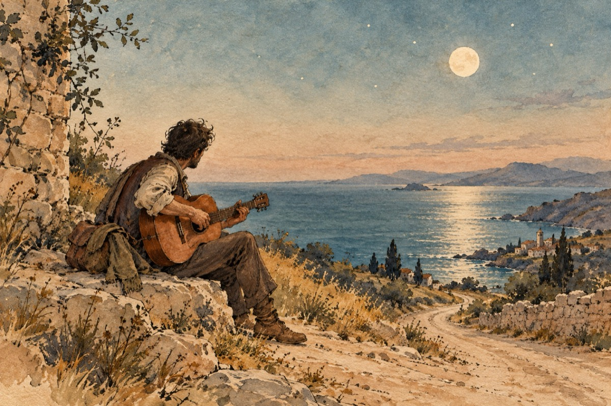

Tu chitara mea
Soției mele Leonida, De Ziua Îndrăgostiților.
Mi-am luat chitara
Și-am plecat în lumea mare
Mi-am luat chitara
La a muzicii chemare.
Tu dragostea mea
Tu iubita mea
Te caut mereu
Setea sufletului meu!
Unde poți să fii
Liniște în suflet n-am
Dragostea dintâi
Eu și-n vise te chemam.
Mi-am luat chitara
Și-am plecat în lumea mare
Mi-am luat chitara
Cu a muzicii chemare.
Drumurile le-am bătut
Cu chitara după mine
Mările le-am străbătut
Și nu dau nicicum de tine.
Tu dragostea mea
Tu iubita mea
Te caut mereu
Setea sufletului meu!
Am cântat lunii, la stele
Am cântat ursitei mele
Am cântat unde-am umblat
În sfârșit eu te-am aflat
Tu ești muzica mea
Tu ești viața mea!
Vasile Groza